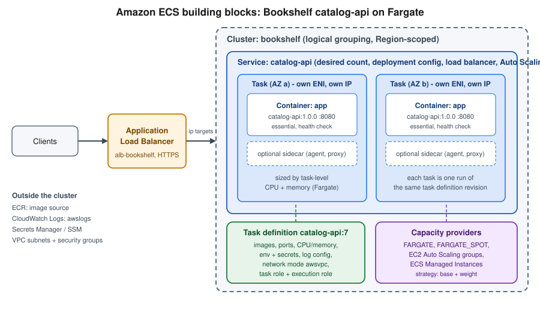
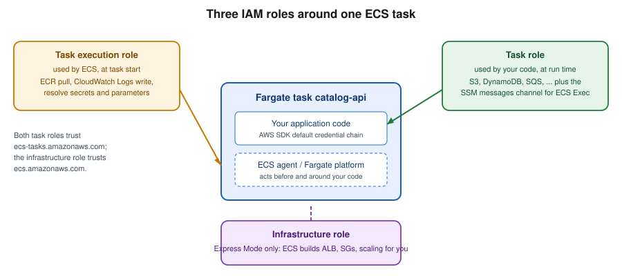

ECS and Fargate
|
This content was generated with the assistance of AI and should be verified against the official documentation before being relied on in production. |
Commands and behaviour on this page are current for AWS CLI v2 (2.37 line), Fargate platform version 1.4.0 (the
LATEST platform for Linux) and ECS Express Mode as released in November 2025 (checked 2026-10-01); re-verify
against aws --version and the linked reference pages before relying on them in a pipeline, because ECS ships
changes frequently. Examples use us-east-1 and the placeholder account ID 111122223333; both are stand-ins for
your own values.
Amazon Elastic Container Service (ECS) is AWS’s own container orchestrator, and AWS Fargate is the serverless
compute engine it can run on: you describe containers, CPU and memory, and AWS finds, patches and isolates the
hardware. This page is the "simple server deployment" path for Bookshelf’s catalog-api (a Spring Boot HTTP
service): the building blocks, the two IAM roles every task needs, the shortest route to a running service (ECS
Express Mode), the full route you graduate to (cluster, task definition, service behind the alb-bookshelf
Application Load Balancer), how secrets and logs are wired in, what it costs and what to do when a task will not
start. Deployment strategies, Service Auto Scaling, Service Connect, Fargate Spot and scheduled tasks are covered
in depth on ECS Deployments, Scaling and Networking. Choosing ECS over Lambda, EKS or EC2 is
covered on Choosing a Compute Service; the image comes from
Container Registry; the VPC from VPC Networking. For the Azure
counterpart see Container Apps.
Concepts
Six objects recur in every ECS command and console screen:
- Cluster
-
A Region-scoped logical grouping of tasks and services plus the capacity they run on. A cluster is free; you pay for what runs in it. Bookshelf uses one cluster,
bookshelf, forcatalog-apiandorders-api. - Task definition
-
A versioned, immutable blueprint (a "revision", addressed as
family:revision, for examplecatalog-api:7) that lists one to ten containers, their images, ports, environment, secrets and log configuration, plus task-level CPU and memory, the network mode, the operating system and CPU architecture, and the two IAM roles. Changing anything creates a new revision; nothing is edited in place. - Task
-
One running instantiation of a task definition, a set of containers that start and stop together. Under
awsvpcnetworking, which is the only mode on Fargate, every task gets its own elastic network interface (ENI), private IP address and security groups. - Service
-
The controller that keeps a desired number of copies of a task definition running, replaces failed tasks, registers them with a load balancer target group, performs deployments and (through Application Auto Scaling) changes the desired count. Use a service for anything long-running such as
catalog-api. - Standalone task
-
A task started with
run-taskthat runs once and stops, for batch jobs and migrations. - Capacity provider
-
The pool of compute a task is placed on:
FARGATE,FARGATE_SPOT, an EC2 Auto Scaling group, or ECS Managed Instances. A capacity provider strategy (baseplusweightper provider) splits tasks across them. Newer guides and tutorials still show the older "launch type" (--launch-type FARGATE); a capacity provider strategy is the current, more flexible mechanism and is what Express Mode uses.

Fargate, EC2 and ECS Managed Instances
| Capacity | You manage | Choose it when |
|---|---|---|
Fargate |
Nothing below the container: no instances, AMIs or patching. Each task runs in its own isolated micro-VM, sized by task-level CPU and memory. |
Default for stateless web services and workers; the least operational work. Supports x86_64 and ARM64 (Graviton). |
Fargate Spot |
Same as Fargate, but tasks can be interrupted with a two-minute warning (SIGTERM, then SIGKILL after |
Fault-tolerant workers and non-production environments; mix with on-demand Fargate through the strategy |
ECS on EC2 (Auto Scaling group) |
The instances: AMI, patching, agent, scaling of the group, bin-packing headroom. |
You need GPUs, specific instance types, host-level access, daemon-style placement or very large sustained workloads where instance pricing wins. |
ECS Managed Instances |
Only which instance types are acceptable; AWS provisions, patches and replaces the EC2 instances for you. |
You want EC2 instance choice and pricing options (including GPU and Savings Plans) without running the instances. |
The memory and CPU of a Fargate task are not independent: only specific combinations are valid, for example 256
(0.25 vCPU) with 512 MiB to 2 GB, 512 with 1 GB to 4 GB, 1024 with 2 GB to 8 GB, 2048 with 4 GB to 16 GB, up to 16
vCPU on Linux and 32 vCPU in the newest sizes. Each task also receives 20 GiB of ephemeral storage by default,
configurable up to 200 GiB. Registering an invalid pair fails with Invalid 'cpu' setting for task.
The two task roles (and the Express Mode infrastructure role)
Confusing the two task-level roles is the single most common source of ECS permission errors, so decide it up front:
- Task execution role
-
Assumed by the ECS agent and Fargate platform, not by your code. It lets ECS pull the image from Amazon ECR, write the container’s logs to CloudWatch Logs and resolve the
secretsentries of the container definition (Secrets Manager, Parameter Store, and the KMS key behind them) before the container starts. Its absence or an under-privileged execution role is why a task never starts. - Task role
-
Assumed by your code at run time through the container credential endpoint, so the AWS SDK default credential chain picks it up with no configuration. It holds exactly what
catalog-apineeds, for example reading thebookshelf-uploads-<account-id>bucket. It is also the role the ECS Exec session channel uses. - Infrastructure role
-
Required only by Express Mode. It lets ECS create and manage the load balancer, listeners, target groups, security groups, ACM certificate, scaling policy, alarms and log group on your behalf.

Both task roles trust the ecs-tasks.amazonaws.com service principal. Trust policy (ecs-tasks-trust.json):
{
"Version": "2012-10-17",
"Statement": [{
"Effect": "Allow",
"Principal": { "Service": "ecs-tasks.amazonaws.com" },
"Action": "sts:AssumeRole"
}]
}Derived from Amazon ECS task execution IAM role and Amazon ECS task IAM role.
The execution role gets the AWS managed policy AmazonECSTaskExecutionRolePolicy (ECR pull and CloudWatch Logs
write) plus an inline policy that is scoped to the secrets and parameters of this one service, and to the KMS key if
they use a customer managed key (see Secrets Manager, Parameter Store and KMS):
{
"Version": "2012-10-17",
"Statement": [
{
"Sid": "ReadCatalogSecret",
"Effect": "Allow",
"Action": "secretsmanager:GetSecretValue",
"Resource": "arn:aws:secretsmanager:us-east-1:111122223333:secret:bookshelf/catalog/db-*"
},
{
"Sid": "ReadCatalogParameters",
"Effect": "Allow",
"Action": ["ssm:GetParameters", "ssm:GetParameter"],
"Resource": "arn:aws:ssm:us-east-1:111122223333:parameter/bookshelf/catalog/*"
},
{
"Sid": "DecryptWithBookshelfKey",
"Effect": "Allow",
"Action": "kms:Decrypt",
"Resource": "arn:aws:kms:us-east-1:111122223333:key/11111111-2222-3333-4444-555555555555"
}
]
}The task role is the application’s identity. For catalog-api it reads cover images from the uploads bucket, and it
carries the permissions ECS Exec needs to open a shell inside the container:
{
"Version": "2012-10-17",
"Statement": [
{
"Sid": "ReadUploads",
"Effect": "Allow",
"Action": ["s3:GetObject", "s3:ListBucket"],
"Resource": [
"arn:aws:s3:::bookshelf-uploads-111122223333",
"arn:aws:s3:::bookshelf-uploads-111122223333/*"
]
},
{
"Sid": "EcsExecChannel",
"Effect": "Allow",
"Action": [
"ssmmessages:CreateControlChannel",
"ssmmessages:CreateDataChannel",
"ssmmessages:OpenControlChannel",
"ssmmessages:OpenDataChannel"
],
"Resource": "*"
}
]
}Derived from IAM roles for Amazon ECS, Pass sensitive data to an Amazon ECS container and Monitor Amazon ECS containers with ECS Exec.
In the AWS Management Console
-
Open IAM → Roles → Create role, choose AWS service as the trusted entity type, then Elastic Container Service → Elastic Container Service Task.
-
Attach
AmazonECSTaskExecutionRolePolicy, name the rolebookshelf-catalog-api-execution, and create it. -
Open the role → Add permissions → Create inline policy → JSON, paste the secrets policy above and save.
-
Repeat the first step for the task role, attach no managed policy, name it
bookshelf-catalog-api-task, and add the task-role policy above as an inline policy.
With the AWS CLI
export AWS_REGION=us-east-1
export ACCOUNT_ID="$(aws sts get-caller-identity --query Account --output text)"
aws iam create-role --role-name bookshelf-catalog-api-execution \
--assume-role-policy-document file://ecs-tasks-trust.json
aws iam attach-role-policy --role-name bookshelf-catalog-api-execution \
--policy-arn arn:aws:iam::aws:policy/service-role/AmazonECSTaskExecutionRolePolicy
aws iam put-role-policy --role-name bookshelf-catalog-api-execution \
--policy-name catalog-secrets --policy-document file://execution-secrets.json
aws iam create-role --role-name bookshelf-catalog-api-task \
--assume-role-policy-document file://ecs-tasks-trust.json
aws iam put-role-policy --role-name bookshelf-catalog-api-task \
--policy-name catalog-api-runtime --policy-document file://task-role.jsonDerived from aws iam create-role, aws iam attach-role-policy and aws iam put-role-policy. More on roles and policies is in Identity and Access.
Prerequisites for Bookshelf
-
An image in ECR, for example
111122223333.dkr.ecr.us-east-1.amazonaws.com/bookshelf/catalog-api:1.0.0, built for the CPU architecture you choose below (see Container Registry). A multi-architecture image runs on both x86_64 and ARM64 Fargate. -
Two subnets in different Availability Zones. The default VPC works for a first try; for anything real use the Bookshelf VPC from VPC Networking with private subnets for tasks and public subnets for the load balancer.
-
The two roles above.
-
An application that listens on
0.0.0.0and answers a health-check path. For Spring Boot, setserver.shutdown=gracefuland expose the Actuator health endpoint so a rolling deployment drains connections (see Metrics and Observability: Micrometer, Actuator, and Distributed Tracing).
ECS Express Mode: the simplest path
ECS Express Mode (announced November 2025) turns "I have a container image" into a load-balanced, auto-scaled, HTTPS-reachable Fargate service with three inputs: a container image, a task execution role and an infrastructure role. Behind that one API call ECS creates, in your own account and visible to you, the following resources:
-
a Fargate-based ECS service (using the
defaultcluster unless you name one) with a task definition, canary deployments and a deployment-failure alarm; -
an Application Load Balancer with an HTTPS listener, host-header listener rules, target groups (
iptargets) and an ACM certificate, giving the service a unique URL; -
security groups for the load balancer and for the tasks;
-
an Application Auto Scaling target with a target-tracking policy (average CPU by default, or memory, or ALB request count per target);
-
a CloudWatch Logs log group for the service.
Up to 25 Express Mode services in the same VPC share one Application Load Balancer, so the per-service load-balancer cost falls as you add services. There is no extra charge for Express Mode itself; you pay for the underlying resources. Because everything is an ordinary ECS, ELB and Application Auto Scaling resource, you can inspect and tune it with the normal commands afterwards.
In the AWS Management Console
-
Open Amazon ECS and choose Create under Express Mode (the first-run page offers it next to the standard Create cluster flow).
-
Pick the container image (paste the ECR image URI), the Container port (
8080) and a Health check path (/actuator/health). -
Select the Task execution role (
bookshelf-catalog-api-execution) and the Infrastructure role; use Create new role if you have not created the latter (see below). -
Optionally add a Task role, environment variables and secrets, and under Additional configurations change the cluster (
bookshelf), CPU, memory, subnets, security groups, minimum and maximum task count and the scaling metric. -
Review the generated configuration and choose Create. The service page shows the creation progress, and when the status is Active it lists the public URL.
With the AWS CLI
The infrastructure role trusts the ECS service principal and uses the AWS managed policy
AmazonECSInfrastructureRoleforExpressGatewayServices:
cat > ecs-infra-trust.json <<'EOF'
{
"Version": "2012-10-17",
"Statement": [{
"Effect": "Allow",
"Principal": { "Service": "ecs.amazonaws.com" },
"Action": "sts:AssumeRole"
}]
}
EOF
aws iam create-role --role-name bookshelf-ecs-infrastructure \
--assume-role-policy-document file://ecs-infra-trust.json
aws iam attach-role-policy --role-name bookshelf-ecs-infrastructure \
--policy-arn arn:aws:iam::aws:policy/service-role/AmazonECSInfrastructureRoleforExpressGatewayServicesDerived from Amazon ECS Express Mode, the AmazonECSInfrastructureRoleforExpressGatewayServices policy and aws iam create-role.
Create the service. --primary-container accepts shorthand syntax (shown) or JSON, and --cpu/--memory are best
set explicitly because defaults are documented on the Express Mode pages and may change:
aws ecs create-express-gateway-service \
--cluster bookshelf \
--service-name catalog-api \
--infrastructure-role-arn "arn:aws:iam::${ACCOUNT_ID}:role/bookshelf-ecs-infrastructure" \
--execution-role-arn "arn:aws:iam::${ACCOUNT_ID}:role/bookshelf-catalog-api-execution" \
--task-role-arn "arn:aws:iam::${ACCOUNT_ID}:role/bookshelf-catalog-api-task" \
--primary-container "image=${ACCOUNT_ID}.dkr.ecr.${AWS_REGION}.amazonaws.com/bookshelf/catalog-api:1.0.0,containerPort=8080,environment=[{name=SPRING_PROFILES_ACTIVE,value=aws}]" \
--cpu 512 --memory 1024 \
--health-check-path /actuator/health \
--scaling-target minTaskCount=2,maxTaskCount=6,autoScalingMetric=AVERAGE_CPU,autoScalingTargetValue=60Derived from aws ecs create-express-gateway-service.
Subnets and security groups are optional: without --network-configuration, Express Mode uses the default VPC’s
public subnets (the default VPC needs at least two public subnets in two Availability Zones). Supplying public
subnets creates an internet-facing load balancer and gives tasks public IPs; supplying private subnets creates an
internal load balancer, and you must provide a NAT gateway or VPC endpoints so tasks can reach ECR and CloudWatch
Logs. The first Express Mode service in a VPC fixes the subnets of that VPC’s load balancer, so pass subnets from
every Availability Zone. Describe, update and delete use the service ARN that the create call returns:
SERVICE_ARN="$(aws ecs describe-services --cluster bookshelf --services catalog-api \
--query 'services[0].serviceArn' --output text)"
aws ecs describe-express-gateway-service --service-arn "$SERVICE_ARN" \
--query 'service.activeConfigurations[0].ingressPaths[0].endpoint' --output text
aws ecs update-express-gateway-service --service-arn "$SERVICE_ARN" \
--primary-container "image=${ACCOUNT_ID}.dkr.ecr.${AWS_REGION}.amazonaws.com/bookshelf/catalog-api:1.0.1,containerPort=8080"Limitations and when to graduate
| Aspect | Express Mode behaviour |
|---|---|
Deployment strategy |
Canary, set by Express Mode and not changeable on the service. Choose a full service for rolling, linear or built-in blue/green with your own bake time and hooks. |
Load balancer |
ECS owns the listener rules, target groups and certificate; they cannot be updated through Express Mode. Bring your own ALB, path-based routing across services or Service Connect with a full service. |
Immutable on create |
Service name, cluster and tags are fixed at creation. Container name defaults to |
Workload shape |
HTTP/HTTPS request-response services on Fargate (x86_64 or ARM64). Not for background workers with no HTTP port, daemons or EC2 capacity. |
Sharing |
Up to 25 services per VPC share one ALB; ALBs are added and removed automatically. |
Custom task definition |
You may pass |
Graduate when you need a deployment strategy other than canary, your own listener rules and certificates, private service-to-service traffic, Fargate Spot or EC2/Managed Instances capacity, or infrastructure managed by CloudFormation/CDK. Because Express Mode resources are ordinary ECS resources, you can read their configuration and rebuild the same shape as a full service (next section) rather than starting from scratch.
Older guides and tutorials present AWS App Runner as the simplest way to run a container and AWS Copilot CLI as the easiest way to deploy to ECS. AWS App Runner has been closed to new customers since 2026-04-30, with ECS Express Mode the documented migration target, and the AWS Copilot CLI reached end of support on 2026-06-12. Lightsail container services still exist as a fixed-price option for very small workloads (see Choosing a Compute Service).
The full path: cluster, task definition, service behind an ALB
Everything below is what Express Mode generates for you, spelled out so you can control it.
Log group
aws logs create-log-group --log-group-name /ecs/bookshelf/catalog-api
aws logs put-retention-policy --log-group-name /ecs/bookshelf/catalog-api --retention-in-days 30Derived from aws logs create-log-group and aws logs put-retention-policy.
The console creates the group for you when the Auto-configure CloudWatch Logs option is selected in the task definition; creating it yourself lets you set retention (log groups otherwise never expire) and encryption.
Cluster
In the AWS Management Console
-
Open Amazon ECS → Clusters → Create cluster (check the Region selector first).
-
Name it
bookshelf. Under Infrastructure leave AWS Fargate (serverless) selected; optionally add Fargate Spot and Amazon EC2 instances or Managed Instances. -
Under Monitoring turn on Use Container Insights (choose the enhanced observability level if offered) and choose Create.
With the AWS CLI
aws ecs create-cluster --cluster-name bookshelf \
--capacity-providers FARGATE FARGATE_SPOT \
--default-capacity-provider-strategy capacityProvider=FARGATE,base=1,weight=1 \
--settings name=containerInsights,value=enhancedDerived from aws ecs create-cluster and Creating an Amazon ECS cluster for Fargate workloads.
Task definition
The task definition is the file you will version in Git. Save it as catalog-api-taskdef.json; the heredoc is
unquoted so the shell fills in ACCOUNT_ID and AWS_REGION:
cat > catalog-api-taskdef.json <<EOF
{
"family": "catalog-api",
"networkMode": "awsvpc",
"requiresCompatibilities": ["FARGATE"],
"cpu": "512",
"memory": "1024",
"runtimePlatform": { "cpuArchitecture": "ARM64", "operatingSystemFamily": "LINUX" },
"executionRoleArn": "arn:aws:iam::${ACCOUNT_ID}:role/bookshelf-catalog-api-execution",
"taskRoleArn": "arn:aws:iam::${ACCOUNT_ID}:role/bookshelf-catalog-api-task",
"ephemeralStorage": { "sizeInGiB": 21 },
"containerDefinitions": [{
"name": "app",
"image": "${ACCOUNT_ID}.dkr.ecr.${AWS_REGION}.amazonaws.com/bookshelf/catalog-api:1.0.0",
"essential": true,
"portMappings": [{ "containerPort": 8080, "protocol": "tcp" }],
"environment": [
{ "name": "SPRING_PROFILES_ACTIVE", "value": "aws" },
{ "name": "JAVA_TOOL_OPTIONS", "value": "-XX:MaxRAMPercentage=75" }
],
"secrets": [
{ "name": "DB_PASSWORD",
"valueFrom": "arn:aws:secretsmanager:${AWS_REGION}:${ACCOUNT_ID}:secret:bookshelf/catalog/db-AbCdEf:password::" },
{ "name": "CATALOG_PAGE_SIZE",
"valueFrom": "arn:aws:ssm:${AWS_REGION}:${ACCOUNT_ID}:parameter/bookshelf/catalog/page-size" }
],
"healthCheck": {
"command": ["CMD-SHELL", "curl -fs http://localhost:8080/actuator/health || exit 1"],
"interval": 30, "timeout": 5, "retries": 3, "startPeriod": 60
},
"stopTimeout": 30,
"linuxParameters": { "initProcessEnabled": true },
"logConfiguration": {
"logDriver": "awslogs",
"options": {
"awslogs-group": "/ecs/bookshelf/catalog-api",
"awslogs-region": "${AWS_REGION}",
"awslogs-stream-prefix": "ecs",
"mode": "non-blocking",
"max-buffer-size": "25m"
}
}
}]
}
EOF
aws ecs register-task-definition --cli-input-json file://catalog-api-taskdef.json \
--query 'taskDefinition.taskDefinitionArn' --output textDerived from aws ecs register-task-definition and Amazon ECS task definition parameters for Fargate.
Notes on the choices above:
-
cpuArchitecture: ARM64runs on Graviton, which is typically cheaper per vCPU-second; the image must be built forlinux/arm64(a multi-architecture manifest satisfies both). LeaveruntimePlatformout for x86_64. -
The health-check
commandruns inside the container, so the image needscurl(or use a Java-based probe).startPeriodgives Spring Boot time to start before failures count. This is separate from the load balancer’s target-group health check and from the service’shealthCheckGracePeriodSeconds. -
initProcessEnabledruns an init process as PID 1 so zombie processes are reaped and ECS Exec works reliably. -
stopTimeoutis the delay between SIGTERM and SIGKILL (Fargate allows up to 120 seconds); with Spring Boot’s graceful shutdown the application finishes in-flight requests inside that window. -
ephemeralStorageabove the 20 GiB default is billed; leave it out unless you need it. -
mode: non-blockingstops a logging outage from blocking the application, at the price of dropping lines when the buffer fills.
In the AWS Management Console
-
Open Amazon ECS → Task definitions → Create new task definition (or Create new task definition with JSON and paste the file above).
-
Set Task definition family
catalog-api, Launch type AWS Fargate, the Operating system/Architecture (Linux/ARM64), and Task size (0.5 vCPU, 1 GB). -
Select the Task role and Task execution role created earlier.
-
Under Container - 1 set the name
app, the image URI, container port8080, then add environment variables; use Add environment variable → ValueFrom for the entries that reference Secrets Manager or Parameter Store. -
Expand HealthCheck, Docker configuration (Init process, Stop timeout) and Logging (Use log collection, the
awslogsdriver and group); choose Create.
Network, load balancer and service
The tasks need a security group that accepts the container port only from the load balancer, and an ip-type
target group because awsvpc tasks register by ENI IP address rather than instance:
VPC_ID=vpc-0abc1234def567890
SUBNETS_PRIVATE="subnet-0aaa1111bbb22222a,subnet-0ccc3333ddd44444b"
SUBNETS_PUBLIC="subnet-0eee5555fff66666a subnet-0111777788889999b"
ALB_SG=$(aws ec2 create-security-group --group-name alb-bookshelf --description "Bookshelf ALB" \
--vpc-id "$VPC_ID" --query GroupId --output text)
TASK_SG=$(aws ec2 create-security-group --group-name catalog-api-tasks --description "catalog-api tasks" \
--vpc-id "$VPC_ID" --query GroupId --output text)
aws ec2 authorize-security-group-ingress --group-id "$ALB_SG" --protocol tcp --port 443 --cidr 0.0.0.0/0
aws ec2 authorize-security-group-ingress --group-id "$TASK_SG" --protocol tcp --port 8080 --source-group "$ALB_SG"
TG_ARN=$(aws elbv2 create-target-group --name catalog-api --protocol HTTP --port 8080 \
--vpc-id "$VPC_ID" --target-type ip \
--health-check-path /actuator/health --health-check-interval-seconds 15 \
--healthy-threshold-count 2 --unhealthy-threshold-count 3 \
--query 'TargetGroups[0].TargetGroupArn' --output text)
aws elbv2 modify-target-group-attributes --target-group-arn "$TG_ARN" \
--attributes Key=deregistration_delay.timeout_seconds,Value=30
ALB_ARN=$(aws elbv2 create-load-balancer --name alb-bookshelf --type application \
--subnets $SUBNETS_PUBLIC --security-groups "$ALB_SG" \
--query 'LoadBalancers[0].LoadBalancerArn' --output text)
# CERT_ARN: an ACM certificate in the same Region (see the Route 53 and certificates page)
aws elbv2 create-listener --load-balancer-arn "$ALB_ARN" --protocol HTTPS --port 443 \
--certificates CertificateArn="$CERT_ARN" --ssl-policy ELBSecurityPolicy-TLS13-1-2-2021-06 \
--default-actions Type=forward,TargetGroupArn="$TG_ARN"Derived from aws ec2 create-security-group, aws elbv2 create-target-group, aws elbv2 create-load-balancer and aws elbv2 create-listener. Certificates are covered in Route 53, DNS and ACM Certificates and load balancers in Load Balancers and Gateways.
Now the service, with the strategy, the load balancer, ECS Exec and a deployment circuit breaker that rolls back a revision whose tasks never become healthy:
aws ecs create-service \
--cluster bookshelf \
--service-name catalog-api \
--task-definition catalog-api \
--desired-count 2 \
--capacity-provider-strategy capacityProvider=FARGATE,base=1,weight=1 \
--network-configuration "awsvpcConfiguration={subnets=[${SUBNETS_PRIVATE}],securityGroups=[${TASK_SG}],assignPublicIp=DISABLED}" \
--load-balancers "targetGroupArn=${TG_ARN},containerName=app,containerPort=8080" \
--health-check-grace-period-seconds 90 \
--deployment-configuration "minimumHealthyPercent=100,maximumPercent=200,deploymentCircuitBreaker={enable=true,rollback=true}" \
--enable-execute-command \
--enable-ecs-managed-tags --propagate-tags SERVICE
aws ecs wait services-stable --cluster bookshelf --services catalog-apiDerived from aws ecs create-service and aws ecs wait services-stable.
Because awsvpc tasks in private subnets have no public IP, they need a route to ECR, CloudWatch Logs, S3 and any
secret store: either a NAT gateway or VPC endpoints (com.amazonaws.<region>.ecr.api, ecr.dkr, logs, a
gateway endpoint for S3 and, if used, secretsmanager and ssm). Endpoints avoid per-GB NAT charges for image pulls
(see VPC Networking). Check the result:
aws ecs describe-services --cluster bookshelf --services catalog-api \
--query 'services[0].{status:status,running:runningCount,desired:desiredCount,events:events[0:5].message}'
aws elbv2 describe-target-health --target-group-arn "$TG_ARN"Derived from aws ecs describe-services and aws elbv2 describe-target-health.
In the AWS Management Console
-
Create the load balancer first: EC2 → Load Balancers → Create load balancer → Application Load Balancer, name
alb-bookshelf, Internet-facing, choose the VPC, at least two public subnets and the ALB security group. Under Listeners and routing add an HTTPS:443 listener, select the ACM certificate, and use Create target group with target type IP addresses, protocol HTTP, port8080and health-check path/actuator/health. -
Open Amazon ECS → Clusters →
bookshelf→ Services → Create. -
Under Compute configuration choose Capacity provider strategy, then Use custom (Advanced) and add
FARGATEwith base1, weight1. -
Under Deployment configuration choose Application type Service, the family
catalog-apiwith revision LATEST, service namecatalog-api, desired tasks2. Under Deployment options keep Rolling update and open Deployment failure detection to enable the Use the Amazon ECS deployment circuit breaker and Rollback on failures options. -
Under Networking select the VPC, the private subnets, the task security group and turn Public IP off.
-
Under Load balancing choose Application Load Balancer → Use an existing load balancer, container
app 8080, the listener and target group, and a Health check grace period of 90 seconds. -
Under Service auto scaling optionally set minimum and maximum task counts and a target-tracking policy; choose Create.
-
Watch the Deployments and Events tabs until the deployment is complete and the Tasks tab shows two running tasks.
Deploying a new version
Task definition revisions are immutable, so a release means registering a new revision and pointing the service at
it. If you only need to restart tasks on the same revision (for example to pick up a rotated secret or a mutable
latest tag), force a new deployment:
# new image: edit the taskdef file (or use jq), register, then update the service
NEW_REV=$(aws ecs register-task-definition --cli-input-json file://catalog-api-taskdef.json \
--query 'taskDefinition.taskDefinitionArn' --output text)
aws ecs update-service --cluster bookshelf --service catalog-api --task-definition "$NEW_REV"
# same revision, restart all tasks (secrets and parameters are only read at task start)
aws ecs update-service --cluster bookshelf --service catalog-api --force-new-deployment
aws ecs wait services-stable --cluster bookshelf --services catalog-apiDerived from
aws ecs update-service.
Prefer immutable version tags (or digests) over latest, which pairs with ECR tag immutability. Pipelines normally
automate the register-and-update step with the aws-actions/amazon-ecs-render-task-definition and
aws-actions/amazon-ecs-deploy-task-definition GitHub Actions using an OIDC role (see
Docker CI/CD with GitHub Actions and Developer Tools and DevOps).
Passing configuration and secrets
A container definition receives configuration in three ways:
| Mechanism | Syntax in the container definition | Resolved |
|---|---|---|
Literal environment variable |
|
At task start; changing it needs a new revision. |
Secrets Manager secret (whole value) |
|
At task start, by the execution role. |
Secrets Manager JSON key |
|
At task start, by the execution role. |
Parameter Store parameter |
|
At task start, by the execution role; |
Environment file in S3 |
|
At task start; the execution role needs |
Values are injected once, when the task starts. Rotating a secret does not change running tasks: start new tasks
with update-service --force-new-deployment, or have the application read the secret itself at run time with the
task role (see Secrets Manager, Parameter Store and KMS and Runtime Configuration). A
failed lookup is a start-up failure (ResourceInitializationError), not a warning. Never put secret values in
environment: they show up in describe-task-definition output and the console.
Application code: credentials from the task role
Inside the container the AWS SDK for Java 2.x discovers the task role through the container credentials provider, which is part of the default credential chain, so the code has no keys and no profile:
package com.example.bookshelf.catalog;
import software.amazon.awssdk.regions.Region;
import software.amazon.awssdk.services.s3.S3Client;
import software.amazon.awssdk.services.s3.model.GetObjectRequest;
public class CoverStore {
// Region comes from AWS_REGION, which ECS sets for the task; credentials come from the task role.
private final S3Client s3 = S3Client.builder()
.region(Region.of(System.getenv().getOrDefault("AWS_REGION", "us-east-1")))
.build();
public byte[] cover(String bucket, String key) {
return s3.getObjectAsBytes(GetObjectRequest.builder().bucket(bucket).key(key).build())
.asByteArray();
}
}Derived from the default credentials provider chain in the AWS SDK for Java 2.x and Amazon ECS task IAM role. The Spring Boot side (Spring Cloud AWS auto-configuration, profiles, graceful shutdown) is in File Storage & Object Stores and Configuration and Profiles. For container images themselves see Registries and Docker Hub; Kubernetes-based alternatives are in Orchestration: Swarm Mode and Kubernetes.
Logging and visibility
The awslogs driver sends each container’s stdout and stderr to CloudWatch Logs, one stream per task named
<prefix>/<container>/<task-id>. Tail it live and query it afterwards:
aws logs tail /ecs/bookshelf/catalog-api --follow --since 30m
aws logs start-query --log-group-name /ecs/bookshelf/catalog-api \
--start-time "$(date -d '-1 hour' +%s)" --end-time "$(date +%s)" \
--query-string 'fields @timestamp, @message | filter @message like /ERROR/ | sort @timestamp desc | limit 20'Derived from
aws logs tail and
aws logs start-query. (date -d is GNU date;
on macOS use date -v-1H +%s.) In the console use CloudWatch → Logs → Log groups or the Logs tab of a
task. When you need to route logs elsewhere, filter or enrich them, use FireLens (the awsfirelens driver) which
runs a Fluent Bit or Fluentd sidecar in the task; for metrics, Container Insights (enabled on the cluster above)
adds task and service CPU, memory, network and storage metrics. Spring Boot logging patterns are in
Logging: Logback Defaults, Structured Output, and Container-Friendly Routing; alarms and dashboards are in
Monitoring and Observability.
Running tasks directly
Use run-task for a one-off job such as a database migration that uses the same task definition but a different
command; the task stops when its essential container exits:
aws ecs run-task --cluster bookshelf --task-definition catalog-api \
--capacity-provider-strategy capacityProvider=FARGATE,weight=1 \
--network-configuration "awsvpcConfiguration={subnets=[${SUBNETS_PRIVATE}],securityGroups=[${TASK_SG}],assignPublicIp=DISABLED}" \
--overrides '{"containerOverrides":[{"name":"app","command":["java","-jar","/app/migrate.jar"]}]}' \
--query 'tasks[0].taskArn' --output textDerived from aws ecs run-task. In the console: Amazon ECS → cluster → Tasks → Run new task. Schedules and event-driven starts (an EventBridge rule or Scheduler target running a Fargate task, for example when a file lands in S3) are covered in ECS Deployments, Scaling and Networking; EventBridge and the other integration services are in Messaging and Integration.
Pricing model
No prices are stated here; use the Fargate pricing page and the AWS Pricing Calculator for current figures (checked 2026-10-01).
-
ECS itself is free. With Fargate you pay for the vCPU and memory resources your tasks request, billed per second with a one-minute minimum, from image pull to task stop, plus ephemeral storage above the included 20 GiB.
-
Architecture and purchase options change the rate: ARM64 (Graviton) tasks are cheaper than x86_64, Fargate Spot is discounted for interruptible workloads, and Compute Savings Plans cover Fargate usage.
-
With EC2 or Managed Instances you pay for instances (Managed Instances adds an AWS management charge on top of the EC2 price) whether or not they are full, so bin-packing efficiency matters.
-
Hidden drivers are usually larger than expected: the Application Load Balancer (hourly plus load-balancer capacity units), NAT gateway hours and per-GB processing for tasks in private subnets, public IPv4 addresses (billed per hour, including those on tasks and load balancer nodes), cross-AZ data transfer, CloudWatch Logs ingestion and storage, Container Insights metrics, and ECR storage and transfer. Express Mode adds nothing of its own but creates an ALB (shared by up to 25 services in a VPC).
-
Cost control levers: right-size tasks from observed CPU and memory, scale to a minimum of two in production and one elsewhere, use VPC endpoints instead of NAT for ECR and S3 traffic, set log retention, and stop development clusters at night by setting the desired count to 0.
See Cost Management and Support for budgets and anomaly detection.
Limits and quotas
Quotas change and are Region-scoped; see
Amazon ECS service quotas and
Fargate quotas for the current
numbers and use aws service-quotas list-service-quotas --service-code ecs to read yours. The limits that matter in
practice are tasks per service, services per cluster, containers per task definition (10), Fargate On-Demand and
Spot vCPU quotas for the account, the ENI/IP capacity of the subnets (every task consumes one IP), the 4096-character
size of environment and secret values per container definition, and the task-launch rate. Request increases early;
a new account’s Fargate vCPU quota can be low.
Troubleshooting
Start with the service events and the stopped task, because the reason is almost always recorded there:
aws ecs describe-services --cluster bookshelf --services catalog-api --query 'services[0].events[0:10].message'
TASK=$(aws ecs list-tasks --cluster bookshelf --service-name catalog-api --desired-status STOPPED \
--query 'taskArns[0]' --output text)
aws ecs describe-tasks --cluster bookshelf --tasks "$TASK" \
--query 'tasks[0].{stopCode:stopCode,reason:stoppedReason,containers:containers[].{name:name,exit:exitCode,reason:reason}}'Derived from aws ecs describe-tasks and aws ecs list-tasks. In the console open the task’s Logs, Events and Configuration tabs and read Stopped reason; stopped tasks remain visible for roughly an hour.
| Symptom | Likely cause and fix |
|---|---|
|
Wrong image URI or tag; the execution role lacks |
|
The execution role cannot read the secret or parameter, the KMS key policy denies it, the ARN or JSON-key syntax is wrong, or the task cannot reach Secrets Manager, SSM or the endpoint. |
Task stuck in |
The subnet is out of free IP addresses, a security group or subnet ID is wrong, the Fargate vCPU quota is exhausted, or (EC2 capacity) no instance has room. The service events state which. |
|
The application crashed on start: read the logs. Wrong profile, missing secret value or unreachable database. |
Exit code 137 / |
The container exceeded its memory limit. Raise task memory, or set |
Tasks start then are replaced repeatedly; target group shows |
The health check path or port does not match, the application takes longer than the grace period to start (raise
|
|
No healthy targets, or the target security group blocks the ALB; for |
|
The service was not created with |
|
You gave the permission to the execution role instead of the task role. |
ECS Exec opens a shell inside a running container, which is the supported replacement for SSH:
TASK=$(aws ecs list-tasks --cluster bookshelf --service-name catalog-api \
--query 'taskArns[0]' --output text)
aws ecs execute-command --cluster bookshelf --task "$TASK" --container app \
--interactive --command "/bin/sh"Derived from
aws ecs execute-command; the AWS CLI
needs the Session Manager plugin installed
(installation guide).
Enable it on an existing service with aws ecs update-service --enable-execute-command --force-new-deployment.
In the console, open the task and choose Connect (CloudShell). The session commands are audited in CloudTrail and
can be logged to CloudWatch Logs or S3. See also the official
ECS troubleshooting guide and
stopped task error messages.
Clean up
Delete in dependency order; the load balancer and NAT gateway are the items that keep billing if forgotten.
# Express Mode service: deletes the service and its dedicated resources (the cluster stays)
aws ecs delete-express-gateway-service --service-arn "$SERVICE_ARN"
# Full service
aws ecs update-service --cluster bookshelf --service catalog-api --desired-count 0
aws ecs delete-service --cluster bookshelf --service catalog-api --force
aws elbv2 delete-listener --listener-arn "$LISTENER_ARN"
aws elbv2 delete-load-balancer --load-balancer-arn "$ALB_ARN"
aws elbv2 delete-target-group --target-group-arn "$TG_ARN" # after the ALB is gone
aws ec2 delete-security-group --group-id "$TASK_SG"
aws ec2 delete-security-group --group-id "$ALB_SG"
# Task definition revisions: deregister, then delete the inactive ones
aws ecs deregister-task-definition --task-definition catalog-api:1
aws ecs delete-task-definitions --task-definitions catalog-api:1
aws ecs delete-cluster --cluster bookshelf
aws logs delete-log-group --log-group-name /ecs/bookshelf/catalog-api
aws iam detach-role-policy --role-name bookshelf-catalog-api-execution \
--policy-arn arn:aws:iam::aws:policy/service-role/AmazonECSTaskExecutionRolePolicy
aws iam delete-role-policy --role-name bookshelf-catalog-api-execution --policy-name catalog-secrets
aws iam delete-role --role-name bookshelf-catalog-api-execution
aws iam delete-role-policy --role-name bookshelf-catalog-api-task --policy-name catalog-api-runtime
aws iam delete-role --role-name bookshelf-catalog-api-task
aws iam detach-role-policy --role-name bookshelf-ecs-infrastructure \
--policy-arn arn:aws:iam::aws:policy/service-role/AmazonECSInfrastructureRoleforExpressGatewayServices
aws iam delete-role --role-name bookshelf-ecs-infrastructureDerived from
aws ecs delete-express-gateway-service,
aws ecs delete-service,
aws ecs delete-task-definitions,
aws ecs delete-cluster,
aws elbv2 delete-load-balancer and
aws iam delete-role.
In the console: Amazon ECS → cluster → service → Delete service; then Delete cluster; then delete the load
balancer, target group and security groups in EC2; the log group in CloudWatch; and the roles in IAM. A cluster
cannot be deleted while it still has services or tasks, and a task definition revision must be deregistered (it then
becomes INACTIVE) before it can be deleted. Keep the ECR repository if other services use it.
Related pages
-
ECS Deployments, Scaling and Networking continues from here: rolling, blue/green, canary and linear deployments, Service Auto Scaling, Service Connect, Fargate Spot and ECS Exec in operations.
-
Choosing a Compute Service compares ECS, Lambda, EKS and EC2.
-
EKS Clusters and Deploying Microservices on EKS are the Kubernetes alternative.
-
Container Registry covers the ECR repository the image is pulled from.
-
Identity and Access and Secrets Manager, Parameter Store and KMS cover the roles and secrets used above.
-
Container Apps is the Azure counterpart.